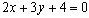
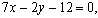
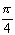

ЗАНЯТИЕ 3.4. ПРЯМАЯ ЛИНИЯ НА ПЛОСКОСТИ
Контрольные вопросы
- Напишите известные Вам виды уравнений прямой на плоскости и объясните смысл величин,
входящих в эти уравнения.
- Как вычислить угол между двумя прямыми? Условия параллельности и перпендикулярности
двух прямых.
Задачи
- Составить уравнение прямой и построить прямую на чертеже, зная её угловой коэффициент k и
отрезок "b", отсекаемый ею на оси Оу:
а) k = , b = 3; б) k = 3, b = 0; в) k =0, b = - 2;
г) k = , b = 3.
- Дана прямая . Составить уравнение прямой,
проходящей через точку
М ( 2; 1 ):
а) параллельно данной прямой;
б) перпендикулярно к данной прямой.
- Даны уравнения двух сторон прямоугольника ,
и одна из его вершин А ( 2; - 3 ).
Составить уравнения двух других сторон этого прямоугольника.
- Даны уравнения двух сторон прямоугольника ,
и уравнение одной из его диагоналей .
Найти вершины прямоугольника.
- Найти проекцию точки Р (- 8; 12 ) на прямую, проходящую через точки
А( 2; -3 ) и В ( - 5; 1 ).
- Найти точку М1 , симметричную точке М2 ( 8, - 9 ) относительно прямой,
проходящей через точки А ( 3; - 4 ) и В ( - 1; - 2 ).
- Даны середины сторон треугольника М1 ( 2; 1 ), М2 ( 5; 3 ) и М3 ( 3; - 4 ).
Составить уравнения его сторон.
- Даны вершины треугольника М1 ( 2; 1), М2 ( - 1; - 1 ) и М3 ( 3; 2 ). Составить
уравнения его высот.
- Даны вершины треугольника А ( 1; - 1 ), В ( - 2; 1 ) и С ( 3; 5 ). Составить
уравнение перпендикуляра, опущенного из вершины А на медиану, проведенную из вершины В.
- Определить угол между двумя прямыми:
а) ;
б)  ;
;
в) ;
г) .
- Даны уравнения сторон треугольника ,
, .
Доказать, что этот треугольник равнобедренный.
Решить задачу при помощи сравнения углов треугольника.
- В треугольнике АВС даны: уравнение АВ , уравнения высот
AM
 и BN .
Составить уравнения двух других сторон и третьей высоты этого треугольника.
и BN .
Составить уравнения двух других сторон и третьей высоты этого треугольника.
- Составить уравнения сторон треугольника, если даны одна из его вершин В (- 4; - 5)
и уравнения двух высот и
 .
.
- Определить, при каких значениях "а" и "b" две прямые ,
:
а) имеют одну общую точку; б) параллельны; в) совпадают.
- Вычислить площадь треугольника, отсекаемого прямой
от координатного угла.
- Составить уравнение прямой, которая проходит через точку Р (2; 3)
и отсекает на координатных осях отрезки равной длины, считая каждый отрезок от начала координат.
Ответы
- а)
 , б) ,
в) , г)
, б) ,
в) , г)  ;
;
- а) , б) ;
- ;
- (2; 1), (4; 2), (- 1; 7), (1; 8);
- (- 12; 5);
- M1 (10; - 5);
-
-
- 
- a) , б) , в) 0,
г) ;
-
- BC: CA: ,
CN:
- 
- а) при , б) при а = 3 и
,
в) при а = 3 и b = 2;
- 6;
-